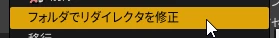

リダイレクタ
用途
- BPで継承する等、すでに使っている状態でC++で型名を変更すると、そのBPは使えなくなる
- 変更前の名前と変更後の名前を記載することで回避できる
問題点
- リダイレクタの記載がどんどん溜まっていく
- ↓のエディタ機能のリダイレクタ修正では修正出来ない

- 一時的に解決してくれるだけなので、BP等使用しているアセットを改めて保存しなおさないといつまでも古い型名で参照し続ける
- 何か変更して保存しないと実際に保存されない
参考
ブループリントに公開した
C++ クラス、関数などの名前のリネーム方法
[UE4] リダイレクター
～消えないゴミファイルの謎